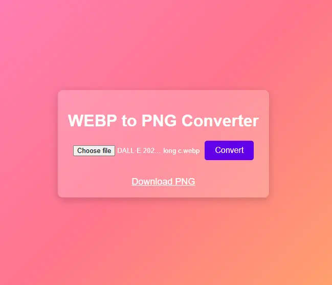

WEBP to PNG Converter Ultimate Guide: Easy and Efficient Ways
If you're looking to convert WEBP to PNG, you're not alone. WEBP, a modern image format developed by Google, is very popular today because it's efficient in compression and great quality. But sometimes compatibility issues or specific project requirements might require you to convert WEBP files to the universally accepted PNG format. This guide will walk you through every aspect of converting WEBP to PNG, such as its importance, tools, and best methods.

Why do you need to convert WEBP to PNG?
- Universal Compatibility: PNG format is supported by every device, platform and software, making it a perfect choice for image editing and sharing.
- Transparency Support: Both WEBP and PNG support transparency, but by converting to PNG you get compatibility with legacy software as well.
- Lossless Quality: PNG is a lossless format, meaning your image quality is not compromised at all.
- Printing and Publishing: PNG is the preferred format for professional printing and publishing.
Ways to Convert WEBP to PNG
Use Online Tools
- You will find online converters that give you the option to convert WEBP to PNG instantly. Just upload your image and press the download button. Popular tools are:- TinyPNG- CloudConvert
- Conversion Through Free SoftwareIf you have a lot of images or privacy is a concern, then try free software like:- GIMP: A powerful tool that easily handles WEBP and PNG formats.- IrfanView: A lightweight software that also does batch conversions.
- Browser ExtensionsYour browser has some extensions that can convert WEBP images to PNG directly.- DIY Method: Conversion Through CodeIf you are tech-savvy, you can use coding tools. It is quite efficient to convert images using JavaScript or Python libraries such as Pillow and Sharp.
SEO Benefits of Converting to PNG
WEBP to PNG conversion also has a positive impact on SEO. PNG format is supported everywhere and your website's images load well on every browser, which improves both user experience and ranking.
Conclusion
Converting WEBP to PNG is easy if you use the right tools and techniques. Whether you prefer online tools, software, or through coding, you have options for every kind of need. Now convert your images to PNG without any tension and share them on every platform.
This guide will help you understand the process and choose the best method. You can also try a method according to your needs!
Read More
Fake WhatsApp Generator
Lenny Face Generator
Fake Tweet Generate
Milliliters to Ounces Converter